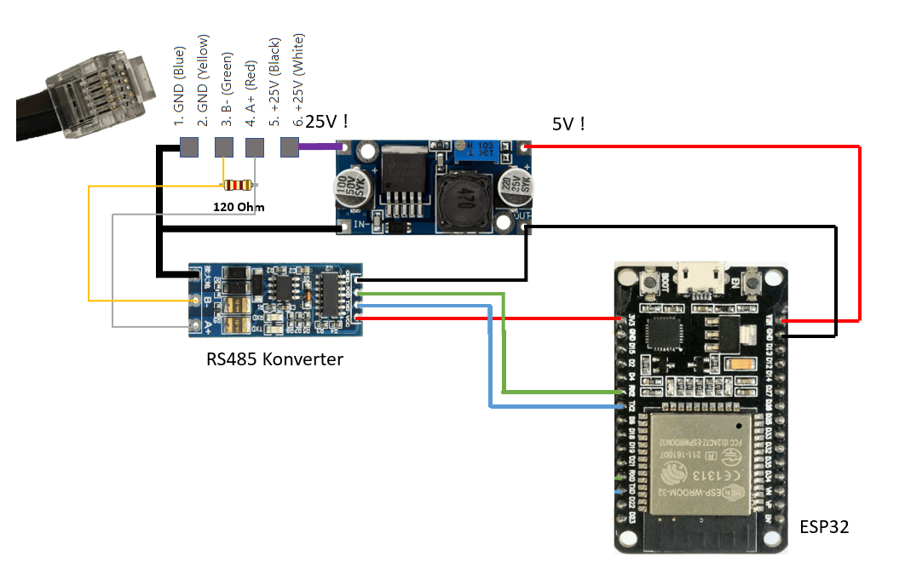
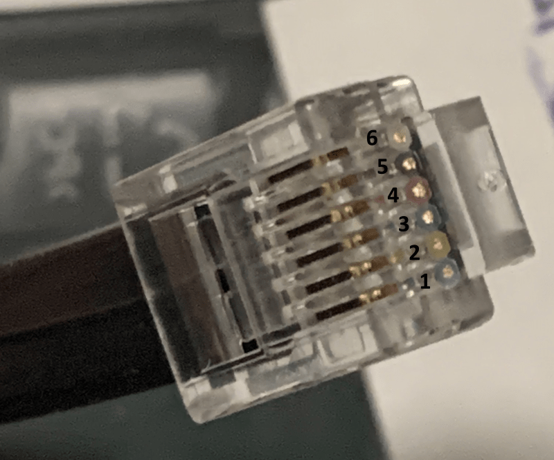
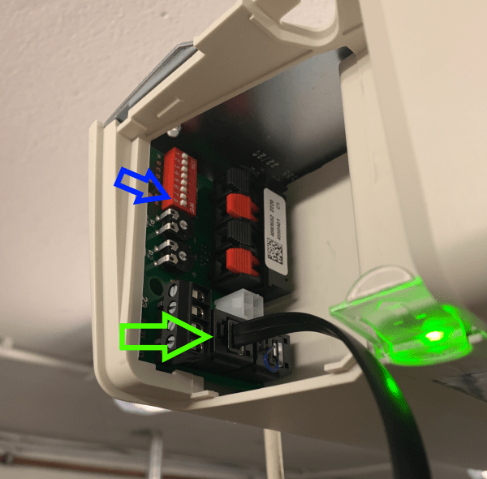

HCPBridge Documentation
HCPBridge Documentation
Getting started
From unboxing (or soldering) to a garage door in Home Assistant in about 15 minutes.
Overview
- Get the hardwareA prebuilt HCP PCB, or an ESP32 + RS485 converter + step-down converter.
- Flash the firmwareAlready done on prebuilt PCBs – otherwise with PlatformIO.
- First setupJoin the
HCPBRIDGEhotspot, enter Wi-Fi and MQTT in the web interface. - Connect to the operator and run a bus scanPlug the RJ12 cable into the operator's bus socket and register the bridge.
- Use itControl the door in the browser, via MQTT or in Home Assistant.
1. Hardware
Option A – prebuilt HCP PCB
The prebuilt boards (see the order thread) come with the firmware installed and plug straight into the operator with an RJ12 cable. You need:
- the PCB and an RJ12 (6P6C) cable,
- for configuring it on the desk: a USB-C power supply (PCB revision 3 and newer) or a 3.3 V supply with at least 500 mA.
Board variants and the matching firmware:
| Board | Firmware environment | Notes |
|---|---|---|
| HCP PCB v1 | HCP_Giffordv1 | Classic ESP32 |
| HCP PCB v2 | HCP_Giffordv2 | ESP32-S3 with PSRAM |
| HCP PCB v3.x | HCP_Giffordv3 | Classic ESP32, In1/In2/Out1/Out2 terminals |
| HCP mini | HCP_Giffordv3 | Same firmware, but no In/Out terminals |
Option B – build it yourself
- An ESP32 development board (ESP32 or ESP32-S3).
- A TTL ↔ RS485 converter with automatic direction control. The firmware does not drive a DE/RE pin, so the module must switch between send and receive by itself (see UART TTL to RS485.pdf).
- A step-down converter from the bus supply (≈24 V) to 5 V for the ESP32.
- A 120 Ω resistor between A and B, and an RJ12 (6P6C) cable.
RJ12 pin-out of the Hörmann bus socket:
| RJ12 pin | Signal | Connect to |
|---|---|---|
| 1 | GND | GND of converter and step-down |
| 2 | GND | GND |
| 3 | B − | RS485 converter B |
| 4 | A + | RS485 converter A |
| 5 | +24 V | step-down converter input |
| 6 | +24 V | step-down converter input |


Default UART pins (configurable later under Expert Configuration):
| Environment | RS485 TXD | RS485 RXD |
|---|---|---|
esp32, HCP_Giffordv1 | GPIO17 | GPIO16 |
HCP_Giffordv2 (ESP32-S3) | GPIO17 | GPIO18 |
HCP_Giffordv3 | GPIO19 | GPIO18 |
m5stack-stamps3 | GPIO13 | GPIO15 |
m5stack-atom-lite | GPIO22 | GPIO19 |
2. Flash the firmware
Skip this step on a prebuilt PCB – the firmware is already installed. For later updates see Updating.
Build and upload with PlatformIO
- Install the toolsInstall Visual Studio Code and the PlatformIO IDE extension.
- Get the sourceClone the repository or download it as ZIP from GitHub and open the folder
HCPBridgeESP32in VS Code (PlatformIO → Open Project). - Pick your boardIn the PlatformIO sidebar, open the environment for your board (table below) under Project Tasks.
- UploadConnect the ESP32 via USB and run Upload. PlatformIO installs all libraries, builds the web interface and flashes bootloader, partition table and firmware.
| Environment | Board | Built by default |
|---|---|---|
esp32 | Generic ESP32 (NodeMCU-32S) | yes |
HCP_Giffordv1 | HCP PCB v1 | yes |
HCP_Giffordv2 | HCP PCB v2 (ESP32-S3 + PSRAM) | yes |
HCP_Giffordv3 | HCP PCB v3.x / HCP mini | yes |
m5stack-stamps3 | M5Stack StampS3 | no |
m5stack-atom-lite | M5Stack Atom Lite | no |
Command line equivalent:
cd HCPBridgeESP32
pio run -e HCP_Giffordv3 -t upload
pio device monitor # 9600 baud, only prints when serial debug is enabledsrc/configuration.h only provides the defaults for the very first boot (and after a factory reset).Updating (OTA)
Each release contains one binary per board, named <environment>-v<version>.bin (for example HCP_Giffordv3-v1.1.0.bin).
- Downloadthe binary for your board from the latest release.
- Open the updaterIn the web interface open System information → OTA Update (or browse to
http://<device-ip>/update) and log in with useradmin, passwordadmin. - UploadSelect the
.binfile. The device restarts automatically; the configuration is kept.
…a / …b binaries – there is only one firmware per board now.3. First setup
- Power the bridgevia USB(-C) or 3.3 V. On the HCP PCBs v2 and v3 the LED lights up during start-up and turns off when the bridge is ready.
- Join the hotspotConnect a phone or laptop to the Wi-Fi network
HCPBRIDGE, passwordgifford47. - Open the web interfaceBrowse to http://192.168.4.1. There is no login by default.
- Enter Wi-Fi and MQTTOpen Basic Configuration, enter your Wi-Fi SSID/password and your MQTT broker (server, port, user, password). Keep the Device ID at 14 characters or less.
- Save & RestartThe bridge restarts and joins your network. Find its IP address in your router (hostname
HCPBRIDGE) and open it in the browser. - Secure itOnce the bridge works in your network, untick Enable Wi-Fi access point or set your own access point password, and optionally set a Web password.

gifford47 is used instead. The Wi-Fi password must consist of printable ASCII characters (32–126).4. Connect to the operator and run the bus scan
HCP2 operators only talk to accessories that were registered by a bus scan. Plugging in (or removing) an accessory without a scan leads to error 04 on the operator display.
- Disconnect the operator from mains power.
- Plug in the bridgeConnect the RJ12 cable to the operator's bus socket (green arrow below).
- Power the operator onThe bridge is powered from the bus. It answers the operator immediately after boot – the Modbus handler is started before Wi-Fi.
- Start the bus scanas described for your operator below.
- CheckThe RS485 LEDs of the bridge blink rapidly and the web interface shows Connected and the door state.

SupraMatic E / P Series 4
- Hold PRG until
00is shown. - Select menu
37with the arrow keys and confirm. - Select parameter
01. - Hold P until
bSappears, then release.bSblinks while scanning. - The display briefly shows
1– the bridge has been registered.
Illustrated guide: bus scan (EN) · Bus-Scan (DE).
ProMatic Series 4
Set DIP switch H (no. 8) to ON – the scan starts – and back to OFF.
RollMatic v2
- Remove mains power, plug in the RJ12 cable, power on and drive the door completely up or down once.
- Hold PRG until
10is shown, press Down until37, press PRG once (00). - Press Up once (
01), then hold PRG untilB.S.is shown. It blinks while scanning. 1for a few seconds = registered;01/00= not found.
0).